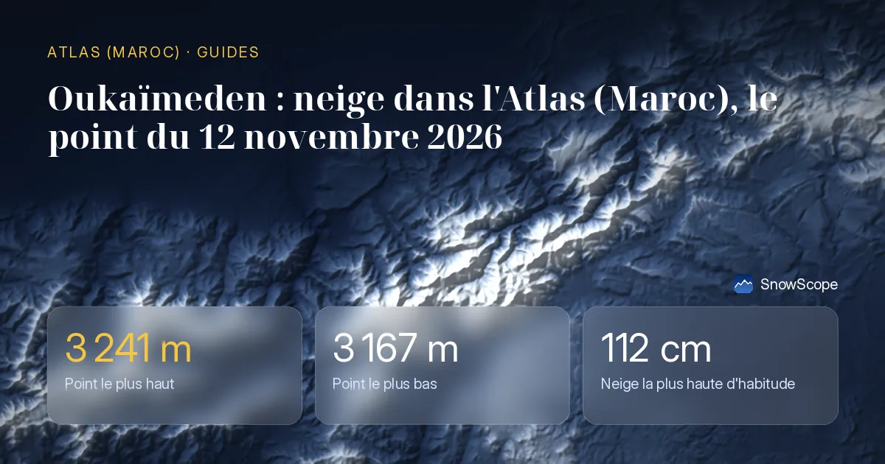

Oukaïmeden : neige dans l'Atlas (Maroc), le point du 12 novembre 2026
Novembre arrive sec dans le Haut Atlas. SnowScope indique 0 cm à tous les trois niveaux d'Oukaïmeden (base 2 600 m, mi-montagne 2 929 m, sommet 3 258 m) le 12 novembre, sans neige fraîche la semaine passée et aucune prévue pour les sept prochains jours. C'est en retard—normalement la première neige s'y installe autour du 5 novembre—mais un début d'automne lent ne prédit rien pour l'hiver à venir.
Consultez les prévisions neige en temps réel pour Oukaïmeden sur l'application SnowScopeHauteurs de neige, alertes poudreuse et carte 3D, gratuitement.

Trois niveaux, tous dénudés
La carte de neige montre du gris dans toute la vallée de l'Ourika et jusqu'aux crêtes hautes : 0 cm mesuré à la base, mi-montagne et sommet. Les 48 dernières heures n'ont rien apporté, ni la semaine passée. Les prévisions pour les sept prochains jours ne montrent pas de neige non plus.
Zéro à chaque niveau ne laisse aucune place au doute. Les pentes du Toubkal et de ses voisins restent exposées aux rochers et éboulis pour l'instant.
Novembre est généralement maigre de toute façon
Sur les 46 hivers passés (1980–81 à 2025–26), la première neige atteint généralement Oukaïmeden autour du 5 novembre. Même en novembre typique, la profondeur est légère : la valeur médiane est 2 cm à la base, 3 cm à mi-montagne et 3 cm au sommet. Un novembre enneigé peut apporter 30 à 38 cm à la base ou 38 cm au sommet, mais c'est rare.
Décembre marque le vrai tournant : 16 cm s'accumulent à la base, 18 cm à mi-montagne et 20 cm au sommet en hiver habituel.
Quand la saison de neige atteint son apogée
Mars est le mois le plus chargé à chaque niveau. En hiver moyen, la base retient 46 cm, mi-montagne atteint 53 cm et le sommet arrive à 58 cm. Le pic médian sur les 46 hivers est 78 cm à la base, 92 cm à mi-montagne et 112 cm au sommet. L'hiver le plus maigre s'est arrêté à 49 cm au sommet ; le plus généreux a atteint 248 cm.
L'hiver dernier (2025–26) a été généreux : 149 jours de neige et un manteau profond partout. La semaine la plus fiable pour atteindre 50 cm ou plus au sommet est la semaine 9 (fin février/début mars), quand 61 % des hivers passés l'ont livré.
Quel niveau offre les meilleures chances
Le sommet à 3 258 m a le meilleur argument statistique pour une neige fiable. Sur les hivers passés, le sommet reçoit une bonne neige (50 cm ou plus) dans au moins la moitié de la saison pendant six semaines ; mi-montagne a un manteau fiable en quatre semaines ; la base n'est fiable qu'une semaine. L'altitude compte ici.
La différence s'accumule sur un hiver. Le sommet atteint en moyenne 112 cm de profondeur maximale ; mi-montagne 92 cm ; la base 78 cm. Cet écart se creuse les années maigres et se resserre les années généreuses, mais le sommet garde toujours la meilleure neige.

Prévoir un séjour à Oukaïmeden
Un novembre sec n'a rien de remarquable dans l'Atlas. La neige y arrive par vagues—de gros tempêtes plutôt qu'une accumulation régulière—donc la forme d'une semaine en dit peu sur le mois à venir. Si vous visez le ski à Oukaïmeden, ciblez fin janvier à mars et consultez la carte de neige une semaine avant le départ.
La route depuis Marrakech peut fermer pendant les fortes neiges : confirmez les conditions locales avant de partir.
Conseils aux skieurs
- Surveillez le sommet à 3 258 m : il conserve la neige la plus longtemps et la plus profonde. Quand la base et mi-montagne sont maigres, le pic reste souvent skiable.
- Enregistrez la page Oukaïmeden et actualisez-la à chaque cycle de prévisions. La neige arrive ici par gros épisodes, donc les changements se voient rapidement.
- Fin février à mars offre la meilleure chance statistique d'un manteau profond. Si vous pouvez être flexible, c'est alors qu'il faut réserver.
- L'ouverture du remontée et de la station dépend de l'exploitant, pas de la profondeur de neige indiquée sur notre carte.
- Les tempêtes hivernales peuvent apporter 20–30 cm en un seul événement à cette altitude. Quand la neige arrive, elle peut fermer la route un jour ou deux.
À propos de ces chiffres
Les hauteurs de neige des stations sont la neige la plus épaisse sur le haut du domaine à la date indiquée ; ce sont des estimations pour une zone, pas une mesure en un point. Les prévisions peuvent changer. Consultez toujours le bulletin d'avalanche officiel avant le hors-piste.
Citer ce bulletin
Pour la recherche, l'enseignement ou la presse : chiffres et graphiques réutilisables librement sous CC BY 4.0 avec cette citation.
SnowScope (2026), Oukaïmeden : neige dans l'Atlas (Maroc), le point du 12 novembre 2026, https://snowscope.app/blog/fr/2026/11/oukaimeden-neige-atlas-maroc-12-novembre-2026.html, consulté le 2026-11-12
SnowScope (Atlas Labs). (2026, November 12). Oukaïmeden : neige dans l'Atlas (Maroc), le point du 12 novembre 2026. SnowScope snow reports. https://snowscope.app/blog/fr/2026/11/oukaimeden-neige-atlas-maroc-12-novembre-2026.html
BibTeX
@misc{snowscope2026oukaimedenneigeatlasmaro,
author = {{SnowScope (Atlas Labs)}},
title = {Oukaïmeden : neige dans l'Atlas (Maroc), le point du 12 novembre 2026},
year = {2026},
month = nov,
howpublished = {\url{https://snowscope.app/blog/fr/2026/11/oukaimeden-neige-atlas-maroc-12-novembre-2026.html}},
note = {Published 2026-11-12 07:16 UTC; accessed 2026-11-12}
}· CC BY 4.0 · Méthodes, données et outils →
Oukaïmeden : neige et température selon l'altitude, cet hiver vs l'hiver dernier (outils) →
Suivre Oukaïmeden
Gratuit : un message quand la neige arrive, et la météo chaque matin.
Autres bulletins neige

Oukaïmeden se trouve à 50 km de Marrakech. La neige de décembre est fine et imprévisible : organisez-vous autour des tempêtes, pas du calendrier. Données du 13 novembre 2026.

À la station de ski d'Oukaïmeden au Maroc, un 15 décembre typique n'apporte que 16 cm à mi-montagne. SnowScope montre les probabilités à partir de 46 hivers de données.

Décembre n'apporte que 18 cm de profondeur typique à mi-montagne à Oukaimeden, contre 53 cm en mars. Le début de saison est maigre mais possible. Données du 13 novembre 2026.